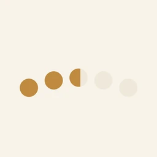
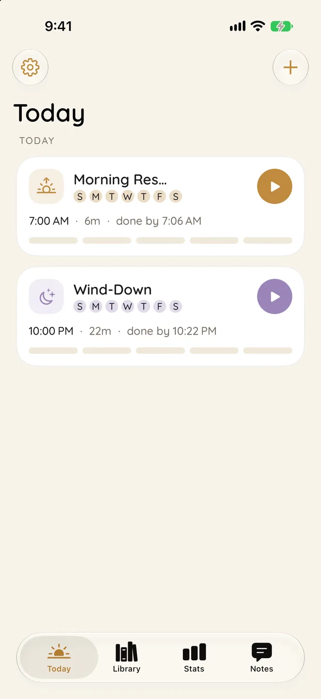

Productivity
Haru
하루. One day, pressed play.
iPhone · Watch

The app
하루. One day, pressed play.
A routine sequencer. An ordered list of short timed steps that you press play on and then simply follow. Haptics lead, so you can run a morning routine without looking at the screen.
Local first, no account, no feed, and none of the anxiety mechanics habit apps reach for. Nothing is fetched at build time either: the whole thing is a local package with no dependencies.
Features
What it actually does.
Timed routine sequences
Haptics first, screen optional
Apple Watch app and widgets
No dependencies at all
Privacy
No account, no network, no feed.
StorageOn device
On-device
AnalyticsNone
No analytics of any kind.
Third partiesNone
No third-party SDKs, trackers or advertising.